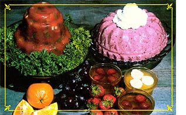

Penny Henderson shares her secret for making nutritious gelatin treats.
When the sweltering heat of late summer arrives, almost everybody begins to feel a bit lethargic, and it's a pretty good bet that no member of the family is going to volunteer to cook dinner . . . nor is anyone likely to be very enthusiastic about eating a hot meat. However, I'd always been successful in tempting my crowd's taste buds with the light, cool fruitiness of "jello" ... it's easy to prepare, and it makes a delicious salad or dessert that the youngsters really love.
In fact, I was flat convinced that packaged, flavored gelatin was the perfect solution to those no-appetite warm-weather days . . . until I happened to read the ingredients on a box of the commercially available, presweetened confection. This is what it listed: "Sugar, gelatin, adipic acid (for tartness), fumaric acid (for tartness), disodium phosphate (to lessen acidity), artificial flavor, artificial color, BHA."
Yikes! Whatever happened to good old wholesome, naturally sweet fruit, for gosh sakes? Well, I could see right then and there that if I wanted to serve a treat that was both flavorful and free of all those chemicals, I'd have to make it myself.
So I decided to read the side of a box of unflavored Knox gelatin ... and was happily surprised. "Ingredient: gelatin." That's all ... no preservatives, no additives, no artificial anything. I concluded that a combination of unflavored gelatin and fruit juice must be the basic recipe for making jello "from scratch" . . . and it really turned out to be just about that simple.
The first liquid I tried to jell (successfully, I might add!) was orange juice. I simply followed the directions on the Knox package . .. and mixed one envelope of the granules with 1I2 cup of water in a small saucepan. I stirred this mixture over medium heat for three minutes-until the gelatin powder dissolved-and then removed it from the burner before adding 1/4 cup of sugar and 1-1/2 cups of orange juice.
Once the sugar was totally in solution, t poured the liquid into four sherbet glasses. After 30 minutes in the refrigerator, my "creations" had already partially set . .. so I garnished each one with fresh fruit, using the day's harvest from my berry patch (eight strawberries and four raspberries), and let the glasses chill until serving time. The result was a beautiful-and lusciousdessert!
However, using that 1/4 cup of sugar bothered me (after all, I was trying to escape from the processed-sweetener syndrome) . . . so I've substituted honey-to taste-in my later attempts. (Sweetening often is not needed at all . . . although desserts made with such fruits as sour lemons and grapes may require a little honey.)
When you begin to create your own gelatin concoctions, you'll find that the endless variety of possibilities is limited only by your imagination. In my case, I was able to find lots of good ideas in my mother's old copy of the Woman's Home Companion Cookbook ... including tips on preparing the following goodies:
Whipped Jellies. Mix the gelatin as usual (using whatever fruit juice you prefer) and chill it. When the gel is partially set, but not yet firm (it should be about the consistency of white household glue), whip the mixture with a rotary beater until it's light and frothy . . . then chill it again.
Riced Gelatin. To make this unusual treat, simply refrigerate the dessert until it's very firm . . . then force it through a potato ricer, and divide the "shredded jello" into individual glasses.
Jelled Sponges. When the cold gelatin is not quite firm, fold beaten egg whites into itin a proportion of 3 whites to 2 cups of liquid, or 5 whites to 4 cups of liquid-and refrigerate it again until it holds its shape.
After you've practiced preparing gelatin and fruit juice mixtures, you'll gain confidence (as I did) and begin to invent your own combinations. Here are a few of my culinary brainstorms, which might just inspire you to create your own inventions.
There are instructions-in the gelatin package-for "Knox Blox", but that formula calls for the addition of flavored jello mix, so I've developed a different recipe. To make gelatin squares, I first dissolve 7 envelopes of unflavored Knox, by heating them in 2 cups of juice. After the concentrated liquid has cooled down a bit, I add another 2 cups of juice, then pour the mixture into a 9" X 13" pan and chill it. The result is a very firm "sheet" of gelatin, which can be sliced into wiggly little cubes. (The small fry love them, and the blocks are so firm they can stay outside of the refrigerator for hours without melting.)
The young's uns also like Ice Pops, which can, of course, be made from fruit juice alone . . . but they'll be firmer (and more drip-proof) if you simply add one envelope of Knox to four cups of juice. Then just pour the mixture into paper cups-with a popsicle stick pushed into each one to serve as a handle-or into plastic Tupperware molds before freezing.
Here's a great idea if you have some leftover fresh cream to use up. When the gelatin is almost set (again, when it feels like white glue), whip up one cup of heavy cream for every two cups of the jelled juice . . . and then fold the two ingredients together thoroughly. Chill the mixture againuntil it's firm-and you'll have an elegant dessert, into which you can stir some soft fruit (strawberries, raspberries, orange sections, or bananas) before you serve it.
Gelatin is not limited to use in desserts, of course . . . you can also create some unusual salads with the "wonder worker". Try jelling V-8 or another vegetable juice instead of fruit nectars, and you'll produce what cookbooks call an aspic . . . although I prefer to think of it as "vegetable jello". You can serve this variation plain, or you might want to stir in chopped and shredded raw veggies-such as carrots, celery, peppers, sprouts, olives, etc.--before the mix jells . . . for a satisfying and wholesome molded salad.
Even the few sample ideas in this article should convince you that a package of Knox is one of the most versatile-and easy to prepare-staples that a cook can have in his or her pantry. Gelatin is my favorite cooling, fruity, trickle-down-your-throat summertime dessert ... and it's guaranteed to lift your taste buds out of the dog-day doldrums!
EDITOR'S NOTE: MOTHER's tester pronounced these desserts quite tasty and very simple to make. She reminds us, however, that natural fruit hues are not as bright as are the chemically produced colors in the presweetened gelatin mixes . . . so the "look" of your unartificial confections may take a bit of getting used to.
|
 |
|
|